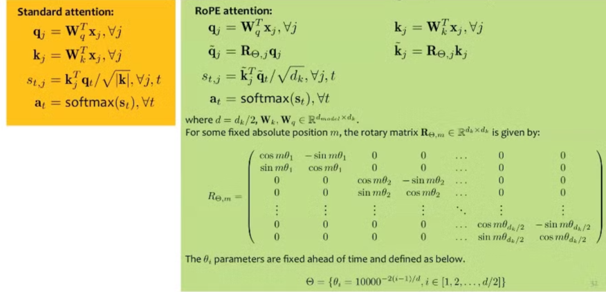
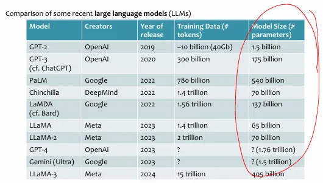
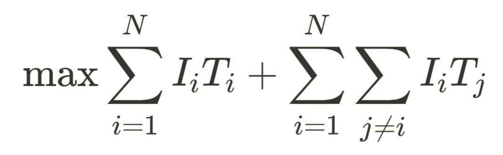

training by count the frequency of words appear most from data
sample from the learned distributions and use the sampled words to determine what distribution to use next
LMs: approximate the chain rule using a parametric function to compute fixed-length representations of prior words and condition on those to compute next words.
→ queries, keys & values aim to learn different features of the input sequence
→ more weights can be assign to previous time-step (solving the forgetting & vanishing gradient problem for long range dependencies with RNN)
→ gradient descent vectors (derive from loss functions) drag the initialized parameters in different direction (allow weight matrices to be varies as trained in parallel)
→ pack qi,ki,vi into matrices
Multi-headed attention: use multiple heads in an attention layers and concatenate the outputs (running attention layers in parallel with different parameters)
Problems with internal covariate shifts → layer normalization
Performance degradation as network growth → residual connection (adding some modifications to the input b=f(a)+a, f is the feed forward NN layer)
Transformer layers
Multi-head attention
Feed forward neural network
Layer normalization
Residual connections
As network depth grows very large, a performance degradation occurs that is not explained by overfitting (i.e. train / test error both worsen)
Residual connections allow for effective training of very deep networks that perform better than their shallower (though still deep) counterparts
Note: Weights shared across time steps
Attention is positional invariant → positional embedding (learn a collection of position specific embedding) & add it to word embedding
Parallelizing Transformer LM Computation
Scaled dot-product attention can be easily parallelized because the attention scores at one timestep do not depend on other timesteps.
In multi-headed attention, each head is also independent of the other heads, which permits yet more parallelism.
The core computation in attention is matrix multiplication, and GPUs/TPUs make this very fast.
Model parallelism: for large models, we can divide the model over multiple GPUs/machines.
Key-value caching: keys and values are re-used over many timesteps so we can cache them for faster access
Batching: rather than process one sequence at a time, transformers take in a batch; the computation is identical for each sequence (if they’re of the same length)
Padding & Truncation
Learning Large Language Models
Recall training NN
train data, test data
loss function
minimize loss via gradient descent
backpropagation
Stochastic GD
Input: training dataset D={(x(n),y(n))}n=1N, step size γ
Randomly initialize parameters θ(0), set t=0
While not converges (or termination criterions have not satisfied)
Randomly sample a data point (x(i),y(i)) from D
Compute the gradient of the loss w.r.t the sample using AutoDiff ∇J(i)(θ(t))
Update θ(t+1)←θ(t)−γ∇J(i)(θ(t))
Increment t←t+1
Output θ(t+1)
Mini-batch SGD → reduce variance & efficiency
Input: training dataset D={(x(n),y(n))}n=1N, step size γ, batch-size B
Randomly initialize parameters θ(0), set t=0
While not converges (or termination criterions have not satisfied)
Randomly sample B data point {(x(i),y(i))}i=1B from D
Compute the gradient of the loss w.r.t the sample using AutoDiff ∇J(B)(θ(t))
Update θ(t+1)←θ(t)−γ∇J(B)(θ(t))
Increment t←t+1
Output θ(t+1)
Recall learning the n-Gram model
use multinomial / categorical distribution to build the log-likelihood
→ apply similar ideas to solve transformers and RNNs
Masking
We train our transformer to predict the next token(s) given the input… then attending to tokens that come after the current token ⇒ cheating!
Each layer of a Transformer LM consists of:
Causal attention
Feed-forward neural network
Layer normalization
Residual connections
Each hidden vector looks back at the hidden vectors of the current and previous timesteps in the previous layer.
→ Can effectively delete or “mask” some of these arrows by selectively setting attention weights to 0
X’=softmax(dkQKT+M)V ← multi-headed attention
Amask=softmax(dkQKT+M) where M=00⋮0−∞0⋮0……⋱…−∞−∞⋮0
Tokenization
word-based:
Can have difficulty trading off between vocabulary size and computational tractability
Similar words e.g., “transformers” and “transformer” can get mapped to completely disparate representations
Typos will typically be out-of-vocabulary (OOV)
character-based:
Much smaller vocabularies but a lot of semantic meaning is lost…
Sequences will be much longer than word-based tokenization, potentially causing computational issues
Can do well on logographic languages e.g., Kanji 漢字
subword
Split long or rare words into smaller, semantically meaningful components or subwords
No out-of-vocabulary words – any non-subword token can be constructed from other subwords (all individual characters are subwords)
Embedding
Given a vocabulary 𝑉 with 𝑉 tokens:
Map each token to a (non-negative) integer
Define a V×de lookup table, where each row is a dense, numerical vector of length de
The row corresponding to each token’s integer assignment is that token’s embedding
Generating:
Sampling from some learned probability distributions over next words
Greedy search/ decoding: select the edge with lowest negative log probability ( (not necessarily find the highest probability path) & computation time is linear in max path length
Ancestral Sampling
Pre-Training vs Fine-Tuning
Unsupervised pre-training
Use unlabeled data
Work bottom-up
Train hidden layer 1 (in an auto-encoder style). Then fix its parameters.
x’ is the reconstruction of input x
Loss=∣∣x–DECODER(ENCODER(x))∣∣
…
Train hidden layer n. Then fix its parameters.
Supervised fine-tuning
Use labeled data to train following “Idea #1”
Refine the features by backpropagation so that they become tuned to the end-task
Modern Transformer Models
No huge difference between architectures of LLM
→ it costly to train → want to make sure that something works given the cost
vanilla PE does not generalize well and does not work with efficient transformers (i.e. T5’s relative positional bias requires constructing the full N×N attention matrix btw positions)
Want to learn the relative position between 2 vectors (via dot product) → RoPE manage to preserve this using nature of rotary (angle remains the same after rotation).
Key idea:
Break each d-dim input vectors into d/2 vectors of size 2
Rotate each of the d/2 vectors by an amount scaled by m
m is the absolute position of the query or the key
low probability that all sub-vectors rotated to the same value
GQA
Idea: reuse the same key-value heads for multiple different query heads
Parameters: The parameter matrices are all the same size, but we now have fewer key/value parameter matrices (heads) than query parameter matrices (heads)
Sliding window attention
Generative Models for Images
Tasks
Image classification
Object localization
Object detection
Semantic Segmentation
Supervised
Minimize cross-entropy loss
Image Captioning
Combine CNN & RNNs
Image generation
Class-conditional generation
Super resolution
Image Editing
Style transfer
Text-to-image (TTI) generation
Given x0,x1,…,xt, predicts xt+1,...,xt+10.
CNNs
Learn a filter for macro-features detection in a small window and apply it over the entire image
Convolutional filter is a small matrix convolved with same-sized sections of the image matrix
Convolutions can be represented by a feed forward NN where
Nodes are connected to only some nodes in the next layer
Many of the weight has the same value
→ much fewer weights than a fully connected layer
→ convolution weights are learned using gradient descent, not prespecified
Padding, down-sampling (Stride, pooling)
Some earlier architectures:
LeNet (Lecun et al., 1998): <0.01 test error rate on MNIST, used sigmoid activation function and mean-pooling
Convolution on multiple input channels
Common architecture: more output channels & smaller outputs in deeper layers
Interesting macro features in the hidden channels → we want more channels (different combinations) instead of combine them
Rather than trying to predict the next token, mask out a few tokens in the sequence and train the model to predict the masked tokens. → This kind of pre-training was popularized by the BERT language model.
Supervised Fine-tuning
Prepend a special class token and fine tune the (pre-trained) model to predict the label for each sequence.
This model is not generative but highly effective discriminator on a variety of tasks.
inputs are P×P pixel patches
Each patch is embedded linearly into a vector of size 1024
Uses 1D positional embedding (still work as the model can learn from the position embedding)
Pretrained on a large, supervised dataset (ImageNet 21K, JFT-300M)
Can be fine-tuned by learning a new classification head on some small target dataset (CIFAR-100)
Performance is proportional with size of dataset (cannot compete with CNN unless trained with huge amount of data)
Generative Adversarial Networks (GANs)
→ Minimax game between the Discriminator and the Generator
Generator: minimize the likelihood of its generated (fake) image being classified as fake, according to a fixed discriminator
Vector of noises → Image
Structure: (eg. DCGAN) inverted CNN with fractionally-strided convolution layers
θminlog(1−Dϕ(Gθ(z(i)))
Discriminator: maximize the likelihood of a binary classifier with labels {real = 1, fake = 0}, on the fixed output of the generator
Image → {real, fake}
eg. PatchGAN - look at each patch of the image and predict whether it is real or fake
Learns a continuous codebook, but the encoder outputs discrete codes
Decoder takes a code and generates a sample conditioned on it
U-NET
→ image segmentation
→ instance segmentation
PGM/ Variational Inference
Unsupervised learning
Assumptions
Our data comes from some distribution p∗(x0)
We choose a distribution pθ(x0) for which sampling x0∼pθ(x0) is tractable
Goal: learn θ s.t. pθ(x0)≈p∗(x0)
Examples
Autoregressive LMs
true p∗(x0) is the (human) process that produced text on the web
choose pθ(x0) to be an autoregressive language model – autoregressive structure means that p(xt∣x1,…,xt−1)∼Categorical(.) and ancestral sampling is exact/efficient.
learn by finding θ≈argmaxθlog(pθ(x0)) using gradient based updates on ∇θlog(pθ(x0))
GANs
true p∗(x0) is distribution over photos taken and posted to Flikr
choose pθ(x0) to be an expressive model (e.g. noise fed into inverted CNN) that can generate images – sampling is typically easy:
z∼N(0,I) and x0=fθ(z)
learn by finding θ≈argmaxθlog(pθ(x0))?
No! Because we can’t even compute log(pθ(x0)) or its gradient
Why not? Because the integral is intractable even for a simple 1-hidden layer neural network with nonlinear activation
⁍
VAEs / Diffusion Models
true p∗(x0) is distribution over photos taken and posted to Flikr
choose pθ(x0) to be an expressive model (e.g. noise fed into inverted CNN) that can generate images– sampling is will be easy
learn by finding θ≈argmaxθlog(pθ(x0))?
Sort of! We can’t compute the gradient ∇θlog(pθ(x0))
We instead optimize a variational lower bound (more on that later)
From VAEs to Diffusion Models, roughly
Define a probability distribution involving Gaussian noise
Use a variational lower bound as an objective function
Learn the parameters of the probability distribution by optimizing the objective function
Variational Inference
→ Suppose we have an interesting distribution p(x,z) and want to work with its posterior p(z∣x)
→ For training data x and latent variables z, estimating the posterior p(z∣x) is usually intractable (need to sum over all z when we aren’t sure what z is)!
⇒ Approximate p(z∣x) with a simpler q(z∣x) – typically has more independence assumptions than p(z∣x), which is fine b/c q(z∣x) is tuned for a specific x
⇒ Key idea: pick a single q(z∣x) from some family Q that best approximates p(z∣x)
Mean-field Variational Inference
→ Assumes our variational approximation qθ(z) treats each variable as independent
− Backpropagation need 3x the computation time & memory as forward computation
− Might not able to access model’s parameters
In-context learning
Feeding the training dataset to the LLM as a prompt and taking the output as a prediction
One-shot: only one example provided to the LLM
The LLM (hopefully) infers patterns in the training dataset during inference (i.e., decoding)
+ No backpropagation & only pass through the training data once per test example
+ Does not require access to the model parameters, only API access to the model itself
− The prompt may be very long and Transformer-based LMs require O(L2) time/space where L = length of context
− The prompt might not fit into max context of a Transformer LM
In-context learning for text & images
Zero-shot learning with LLMs
Zero-shot learning: during test time, make predictions about labels or classes that were not observed during training.
→ Train a score function on (input, description) pairs: f(x(i),d(z(j)) is high for true label’s description and low otherwise
→ Infer the label with highest scoring description during test time
Traditional zero-shot learning methods typically require access to “semantic” or “auxiliary” information about both seen and unseen classes e.g., manually-defined attributes or raw text descriptions.
Provide a prefix sequence or “prompt” to the LLMs such that its likely completion is the answer you want
Can do conditional sampling from the model’s learned distribution over next tokens to generate completions: p(xT+1∣prompt=[x1,…,xT])
LLMs were exposed to many NLP tasks appear (in some form) on the internet/in the training datasets (e.g. WebText).
Contamination (detect by n-gram matching) & memorization
Given the the answer lies in training data, the LLMs sometime did better or worse (some evidences that LLMs not purely memorize the data)
Zero-shot performance is highly dependent on model size
Few-shot learning via in-context learning with LLMs
Few-shot learning: during test time, make predictions about labels or classes that were barely observed during training
Learn a low-dimensional embedding for the inputs and do some 𝑘NN style prediction in the latent space
Data augmentation = create more (potentially bad, potentially irrelevant, potentially wrong) training inputs
Sensitivity of in-context learning
→ Performance is sensitive to
The order the training examples are presented [Lu et al., ‘22]
→ Performant label orderings are not consistent across models
The amount of training data used in the prompt! [Min et al., ‘22]
Prompt engineering
Not all prompts are equally good!
Zero-shot news article classification using OPT-175B on the AG News dataset
→ What affects the accuracy associated with using a prompt?
Ans: how likely the prompt is under the learned model’s implied distribution over sequences
Some ways of learning better prompts for your task:
Prompt paraphrasing – programmatically generate and test many different prompts from a paraphrase model, then pick the one that works best
Gradient-based search – use optimization to search for the discrete representation of the prompt that makes the desired output most likely
Prompt tuning – directly optimize the embeddings that are input into the LLM, without bothering to construct a discrete representation of the prompt
Insight: literally just asking an LLM to reason about its answer can improve its in-context performance.
Chain-of-thought prompting provides examples of reasoning in the in-context training examples
Parameter efficient tuning
Goal: perform fine-tuning of fewer parameters, but achieve performance on a downstream task that is comparable to fine tuning of all parameters
Subset: Pick a subset of the parameters and fine-tune only those (e.g. only the top K layers of a K+L layer DNN)
Keep all parameter fixed excepts for top K layers
Gradients only need to flow through K layers instead of K+L total layers (train a shallow net instead)
Reduced memory usage b/c we don’t need to store the gradient of the loss w.r.t each parameter for the full computation graph
Adapters: add additional layers that have few parameters and tune only the parameters of those layers, keeping all others fixed [Houlsby et al., ICML ‘19]
A feed forward neural network with one hidden layer ( Wup∈Rr×d,Wdown∈Rd×r), and a residual connection
For input dimension, d, the adapter layer also has output dimension d, but bottlenecks to a lower dimension m in the middle
r is chosen s.t. r<<d and the adapter layers contain only 0.5%–8% of the total parameters
When added to a deep neural network (e.g. Transformer) all the other parameters of the pretrained model are kept fixed, and only the adapter layer parameters are fine-tuned
It works even though the grey modules are kept fixed!
Baseline: fine-tune only the top K layers of BERT-Large
Sometimes adapters even outperform full fine-tuning
Prefix Tuning: for a Transformer LM, pretend as if there exist many tokens that came before your sequence and tune the keys/values corresponding to those tokens
Inject (dummy) prefix tokens, indexed by Pidx, before the real tokens
Represent i’th prefix token’s activation by trainable parameters: hi=Pθ[i,:]
For each i let Pθ[i,:]=MLP(Qθ[i,:]) because having Qθ of lower dimension than Pθ improves stability during training
During training, keep all Transformer parameters fixed, except for θ
LoRA: learn a small Δ for the each of the parameter matrices with the Δ chosen to be low rank
→ Why don’t LLMs overfit when we fine tune them without regularization?
Hypothesis: They are intrinsically low dimensional
Learn a neural network with D parameters in a random lower dimensional subspace, d
Then repeat, gradually increasing the dimensionality, d
Let the intrinsic dimension be the value of d when good solutions (above 90% threshold of full parameterization) start to appear
For MNIST digit recognition, original neural network has D=199,210 parameters but the intrinsic dimension is only d=750
Motivations:
The learned over-parametrized models in fact reside on a low intrinsic dimension.
Directly optimizing the prompt, as in prefix tuning, leads to non-monotonic changes in performance as the number of parameters increases (we want more parameters to mean better performance!)
Adapters and related methods introduce inference latency at test time that is non-trivial!
Initialization
Aij∼N(0,σ2), ∀i,j
B=0
⇒ΔW=BA=0, W0+BA=W0
Hot Swapping Parameters
To get a Standard Linear Layer with parameters W that includes our LoRA fine tuning
W←W0+BA
To remove the LoRA fine tuning from that Standard Linear Layer
W←W−BA=W0
Outperforms full fine tuning on some tasks
For some datasets a rank of r=1 is sufficient
LoRA performs well when the dataset is large or small
Key idea:
Fixed the original pretrained parameters W_0 during fine-tuning
Learn an additive modification to those parameters ΔW, a low rank decomposition:
⁍
where rank(BA)=r
Empirically, for GPT-3, it is most efficient to include LoRA only on the query and value linear layers (achieve results as good as full fine-tuning, but with much less parameters)
During training only the new LoRA parameters are fine-tuned, all the other parameters are kept fixed
PEFT for ViT
Reinforcement learning with human feedback (RLHF)
LLMs are trained to reduce the perplexity of its training corpus
Want some kind of conversationally chatbot - align the LLM with the expectations of a human user for a given task
InstructGPT Dataset
13k prompt/response pairs
Human labelers wrote both an instruction prompt and a demonstration response
Some prompts were taken from early users of the OpenAI API, and labelers wrote the demo response
Employees of DataBricks wrote all the prompt/response pairs
All data is open source!
⇒ Instruction fine-tuned models are often very effective at a much smaller scale than typical LLMs
perplexity(x)=exp(−T1∑t=1Tpθ(xt∣xt’<t))
Q: What if LLM could generate its own fine-tuning dataset? How would we make sure the responses were “good”?
→ further fine-tune an already instruction fine-tuned version of GPT3
Instruction fine tuning on 13k training examples
But the diversity of the responses might be limited because of the small (and potentially not representative) training data
Reward model: Takes 33k prompts and samples K∈{4,…,9} responses from the instruction fine-tuned model for each one, then a human labeler ranks all the responses
→ a smaller LLM (e.g., 6B vs. 175B parameters), but with the softmax over words replaced with a linear layer so that it outputs a scalar value, i.e. the reward of some (prompt, response) pair
→ During training, all (K2)pairwise rankings for a prompt are kept together in a batch for efficiency/stability
⁍
where x is the prompt, K is the number of responses, D is the set of human labelled preferences, rθ is the reward model, yw= higher-ranking responses, yl= lower-ranking responses.
Optimize a policy against reward model via Reinforcement Learning
→ Optimizing a learned reward model, fine-tune the LLM parameters ϕ, by maximizing this probability over samples (x,yw,yl) from the human labelled preferences dataset D
Increase the likelihood of higher-ranking responses, yw, and decrease the likelihood of lower-ranking responses, yl
Assume there exists a (universal) latent reward model, 𝑟∗, that is responsible for the observed preferences according to
Pathways Autoregressive Text-to-Image (Parti) [Yu et al., ‘22]
→ treat the task of text-to-image generation as a sequence-to-sequence task over different token spaces (one for text and one for images)
Start with an off-the-shelf text-encoder pretrained using a BERT-style objective (masked language modelling)
Images are tokenized and the decoder is trained to predict the next image-token
To perform generation, tokens are sampled from the decoder iteratively until the EOS token is generated. Then the sequence is then passed into the trained detokenizer.
Input for training: (caption,image) pairs
Latent Diffusion Models
Diffusion models typically operate in pixel space where training and inference are both incredibly slow
Training:
Guided Diffusion: 150 – 1000 V100 days
Imagen: 256 TPU-v4s for 4 days = 1000 TPU days
Inference:
Guided Diffusion: 50k samples in 5 days on A100
Project the images down to some lower-dimensional latent space, then fit a diffusion model in this latent space
This also makes conditioning the diffusion model on arbitrary vector inputs 𝑦 (e.g., embedded captions) much faster
Conditioning can be done via cross-attention in the UNet layers
The autoencoder projects high dimensional images (e.g. 1024x1024 pixels) down to a lower-dimensional latent space and faithfully projects back up to pixel space
a VAE-like model (regularizes the latent distribution towards a Gaussian)
a VQGAN (performs vector quantization in the decoder i.e., uses a discrete codebook)
Trained the autoencoder ahead of time just on raw images, then kept frozen while training the LDM
Optimize both the parameters of the UNET noise model and the parameters of the LLM simultaneously
Standard approaches to text-based image editing typically require an image mask as well - the mask specifies which part of the image should remain unchanged
The text prompt informs how the unmasked part should be adapted
Goal: Edit images with text only and do not require the user to provide a mask
(1) assumes we have a pretrained latent diffusion model (2) does no parameter estimation
yi correspond to some latent representation of the image
m = # of tokens in the text prompt
n = # of dimensions in the latent space (if we have compression)
n = # of pixels in the image (if had no compression)
the attention weights for a (latent) pixel define a probability distribution over the prompt tokens
Given a mini-batch of N (image, caption) pairs, both encoders are simultaneously pre-trained to maximize the cosine similarityof corresponding image-caption embedding vectors and minimize all other pairwise cosine similarities
Find tokens with highest cosine similarity to the image
→ CLIP-based VLM encoders cannot (naturally) define a loss over images and thus, can only output text since CLIP does not discretize its image embedding.
→ CLIP embeddings are more expressive than the discrete VQ-VAE encodings so can lead to improved performance in some settings
The encoder (e.g., a ResNet-like CNN) maps images to ND-dimensional vectors
The decoder takes the discretized representation and recreates the original image
Treat the gradient w.r.t. zq(x) as an estimate of the gradient w.r.t. ze(x)
(Want ze(x)→zq(x) under certain assumptions, i.e. zq(x) get close to the latent vectors and does not overfit to the training dataset such as diverge to tail of the distribution)
∗sg(.) implies not taking gradient w.r.t this term
→ LMs with VQ-VAE encoders (or any vector quantized image model) can also generate images in addition to text by defining a loss over the image codebook tokens
Scaling-up
→ Want to determine model size, length of training, etc. for LLMs (due to high cost of training with a large number of parameters)
Cost to train LLaMa
Scaling Laws
Power law f(x)=cx−k
Zipf’s law: the the n-th most common word in a corpus appears twice as frequently as the (n+1)-st most common word
Zipf-Mandelbrot law: frequency ∝(rank+b)a1 where a≈1, b≈2.7 learned from data.
Naive tensor parallelism → sequential computation across layers, not parallel!
Idea: work on multiple micro batches concurrently!
Each GPU alternates between one forward pass and one backward pass
Issue: weights are updated in every backward pass, the weights used to compute the forward pass for a microbatch can be different from the weights used to compute the backward pass
The divergence is worse for earlier GPUs in the pipeline
Can lead to poor model convergence/ optimization
⇒ Weight stashing – after every forward pass, store the weights and reload them for the corresponding backward pass
For mini-batch SGD, the update only requires the gradients and the current weights (so data + model + pipeline parallelism (typically) suffices)
Many advanced optimization algorithms require storing additional intermediate or state variables to perform the parameter update
Adaptive Moment Estimation (Adam): combine SGD with momentum (memory of previous gradient steps) and RMSProp (scaled step sizes based on previous gradients)
For Adam, K=3×4=12 because each parameter in ∇wl(W(t)), Mt, and St is stored in FP32 = 4 bytes per parameter
In a transformer LM with causal attention, the computation for each token in some transformer block only depends on the previous tokens at that layer
Idea: instead of waiting for the entire previous layer to finish, start working on token t in layer l as soon as tokens 1 through t−1 in layer l−1 are done
Intuition: increasing pipeline granularity reduces idle time in the pipeline!
Divide the code snippet into (prefix, middle, suffix)
Train with examples of the form
<PRE> prefix <SUF> suffix <MID> middle
Predict using the form
<PRE> prefix <SUF> suffix <MID>
StarCoder
One of the best open source Code Models
Used FIM for pre-training a 15.5B parameter model on 1 trillion tokens of text
LongCoder
Address the problem of working with large codebases
Employs sparse attention to handle long input sequences
Technique: Iterative Self-Refinement
Self-correction with an LLM (e.g. for reasoning problems) does not work
However, when performing self-correction on a code model, we also have access to unit test output
This output from unit tests can lead to great success in iterative self refinement at test time
Audio understanding & synthesis
Representation
Pulse-code modulation (PCM) representation
An audio recording device takes many samples of pressure (amplitude)
A raw audio file has several parameters:
# of channels (e.g. stereo has two)
bit depth (# of bits used to represent each amplitude)
sampling rate (how many samples are taken per second)
Sound wave representation
Use Fast Fourier Transform (FFT) to extract the sinusoidal waves that gave rise to the (periodic) samples we observe
Mel-spetrogram representation
In practice sound changes over time ⇒ need to run many FFTs of overlapping windows to extract a usable representation of real audio (i.e. a frequency-to-mel map)
The output of this process is a spectrogram (can be easily visualized as an image)
Tasks
Speech transcription: taking in the audio of speech and generating the text transcript


 💡
💡


{kind=link}
{kind=link}
{kind=link}
{kind=link}
{kind=link}
{kind=link}
{kind=link}
{kind=link}
{kind=link}
{kind=link}
{kind=link}
{kind=link}
{kind=link}
{kind=link}
{kind=link}
{kind=link}
{kind=link}
{kind=link}
{kind=link}
{kind=link}
{kind=link}
{kind=link}
{kind=link}
{kind=link}
{kind=link}
{kind=link}
{kind=link}
{kind=link}
{kind=link}
{kind=link}
{kind=link}
{kind=link}
{kind=link}
{kind=link}
{kind=link}
{kind=link}
{kind=link}
{kind=link}
{kind=link}
{kind=link}
{kind=link}
{kind=link}
{kind=link}
{kind=link}
{kind=link}
{kind=link}
{kind=link}
{kind=link}
{kind=link}
{kind=link}